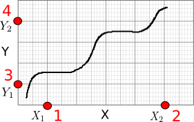
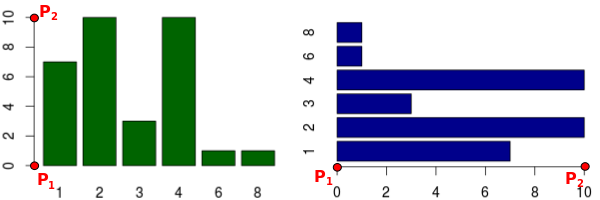

Equation:
[]
Dataset
Mask
Color
Distance
Algorithm
Data Points: 0
Welcome
To begin, please select an image or PDF document to load.
Load Image File
Magnified View Settings
Magnification: | Times |
Crosshair Color: |
|
Choose Plot Type
X and Y Axes Calibration
Enter X-values of the two points clicked on X-axis and Y-values of the two points clicked on Y-axes
| Point 1 | Point 2 | Log Scale | |
| X-Axis: | |||
| Y-Axis: |
*For dates, use yyyy/mm/dd format (e.g. 2013/10/23 or 2013/10). For exponents, enter values as 1e-3 for 10^-3.
Record Efficiency
| Enter efficiency: | % |
Efficiency Dataset
| Enter name for efficiency dataset: |
Error
No points have been selected.
Bar Chart Calibration
Enter the values at the two points selected on the continuous axes along the bars
| Point 1 | Point 2 | Log Scale |
Scale Size
Align Polar Axes
| Point 1 | Point 2 | Log Scale | |
| R: | |||
| Θ: |
Clockwise
Select Range of Variables
Axes Orientation
 |  |
Normal | Reverse |
Range of Variables
0 to 1 | 0 to 100 |
Acquired Data
|
Dataset: Variables:
|
Sort Sort by: Order: Format Date Formatting: Number Formatting: Digits: Column Separator: |
Align X-Y Axes

Click four known points on the axes in the order shown in red. Two on the X axis (X1, X2) and two on the Y axis (Y1, Y2).
Align Bar Chart Axes

Click on two known points (P1, P2) on the continuous axes along the bars
Align Map To Scale Bar

Click on the two ends of the scale bar on the map.
Align Polar Axes

Click on the center, followed by two known points.
Align Ternary Axes

Click on the three corners in the order shown above.
WebPlotDigitizer - Web Based Plot Digitizer
Version 3.10
This program is distributed under the GNU General Public License Version 3.
Copyright 2010-2016 Ankit Rohatgi <ankitrohatgi@hotmail.com>
http://arohatgi.info/WebPlotDigitizer
Specify Color
R: G: B:
Dominant Colors:
Manage Datasets
| Selected Dataset: | |
| Dataset Name: | |
| Data Points: | 0 |
Select Datasets
| Flow-Head Dataset: | |
| Flow-Efficiency Dataset: |
Transformation Equations
The following relationships are being used to convert image pixels to data:
Export JSON
This JSON file contains the axes calibration and the digitized data points from this plot. This file can be imported later to resume work or reuse the calibration in another plot.
Import JSON
Specify a previously exported JSON file to load here. Note that this will clear any unsaved data points in the current plot.
Keyboard Shortcuts
Click to select a data point. The following keys can then be used to the adjust the position:
| Cursor (Arrows) - | Move up/down/right/left |
| Shift + Cursor - | Faster rate of movement |
| Q - | Select next point |
| W - | Select previous point |
| Del/Backspace - | Delete point |
| E - | Edit label (Bar Chart) |
Edit Label
Label:
Perspective Transformation

Click on four corners of the region to be transformed as shown.
Edit Existing Calibration?
Do you wish to tweak existing axes calibration or select a new axes type?